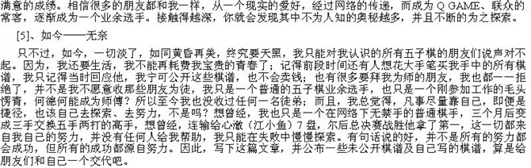
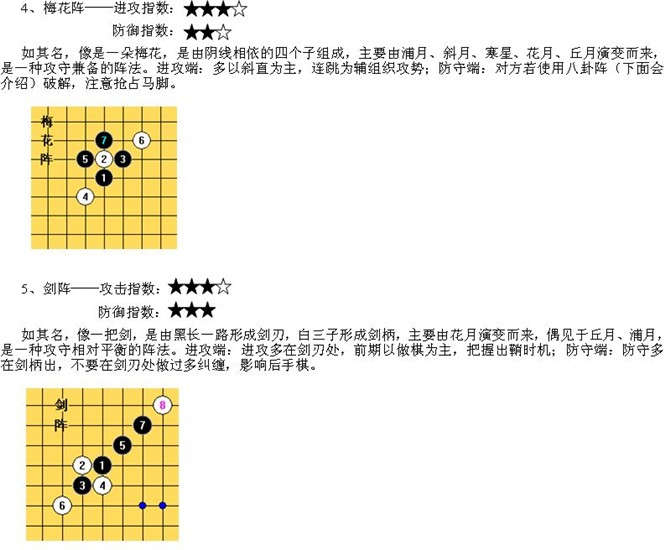
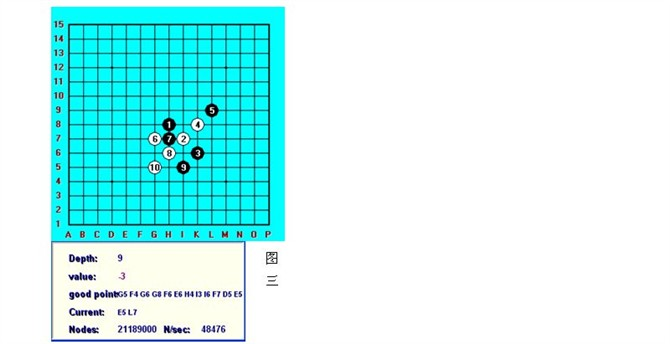
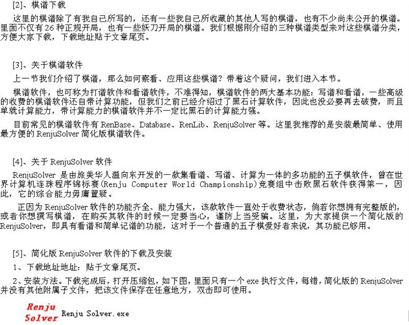
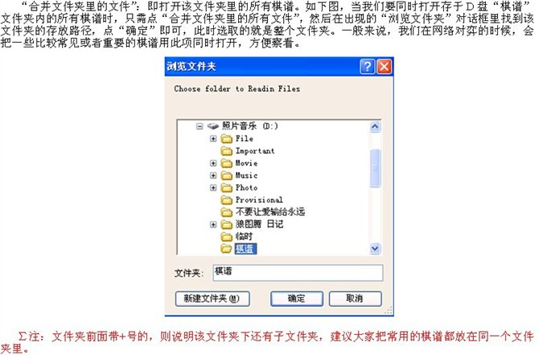

网络五子棋技术讲解、深入分析及各种软件、棋谱的下载与运用
#1 网络五子棋技术讲解、深入分析及各种软件、棋谱的下载与运用 作者：有志青年 发表时间：2010-3-7 23:31:26
详细内容请见http://yw47509061.blog.163.com/blog/static/135187747200911244374372/edit/
网络五子棋技术讲解、深入分析及各种软件、棋谱的下载与运用
纪念日 2009年12月完作 若转载，请注明出处
文章首发于我的QQ空间：http://user.qzone.qq.com/200603169
【有志注：先发截图版，再发文字版吧，文字版中缺少插图】


#2 Re:网络五子棋技术讲解、深入分析及各种软件、棋谱的下载与运用 作者：有志青年 发表时间：2010-3-7 23:34:03



#3 Re:网络五子棋技术讲解、深入分析及各种软件、棋谱的下载与运用 作者：有志青年 发表时间：2010-3-7 23:36:29


#4 Re:网络五子棋技术讲解、深入分析及各种软件、棋谱的下载与运用 作者：有志青年 发表时间：2010-3-7 23:38:55




#5 Re:网络五子棋技术讲解、深入分析及各种软件、棋谱的下载与运用 作者：有志青年 发表时间：2010-3-7 23:41:17


#6 Re:网络五子棋技术讲解、深入分析及各种软件、棋谱的下载与运用 作者：有志青年 发表时间：2010-3-7 23:43:49
序
这篇心得包含了我对网络五子棋的大部分见解，历时约3个月，每次一想到重要环节就马上记到这上面，并且一空下来就修改完善棋谱，总之，我想以我对五子棋的热爱感染更多的人，让更多的“新手”加入到“高手”行列，让更多的“高手”加入到“大师”行列。很多刚接触网络五子棋的朋友，会很纳闷“什么叫有禁手”、“如何下出必胜”“什么是软件”、“黑石是什么，在哪下载”、“什么是棋谱、在哪下载、怎么去用”等等。希望这篇文章能给你需要的答案。
文章共分为九章，希望大家看的满意，若出现评价性言辞，仅代表个人观点。
录
第一章、我的经历
第二章、新手需知
第三章、品行修养
第四章、新手进阶
第五章、高手进阶
第六章、软件进阶
第七章、棋谱进阶
第八章、人、软、谱进阶
第九章、大师进阶
第二章、新手需知
——了解五子棋知识、掌握10种规则并学会应用
新手在接触五子棋的时候，并不要忙于先下棋，毕竟一些理论上的知识还是要了解下，免得在下棋过程中，对一些问题疑惑不解，此时再来寻找答案，难免手忙脚乱。为此，归纳了几点，作为刚接触五子棋的朋友需要知晓的问题。
[1]、五子棋的解释
引用《辞海》中所言，五子棋是“棋类游戏，棋具与围棋相同，两人对局，轮流下子，先将五子连成一行者为胜。”。五子棋的名称：日文亦有“连五子、五子连、串珠、五目、五目碰、五格、五石、五法、五联、京棋”等多种称谓，英文则称之为FIR (Five In A Row的缩写)、Gomoku(日语“五目”的罗马拼音)、Gobang、connect 5、mo-rphion。捷克语piskvorky，韩语omok、韩国人还称之为情侣棋（我很喜欢这名字）。
[2]、五子棋的起源
五子棋相传起源于四千多年前的尧帝时期，比围棋的历史还要悠久，可能早在“尧造围棋”之前，民间就已有五子棋游戏。有关早期五子棋的文史资料与围棋有相似之处，因为古代五子棋的棋具与围棋是完全相同的。在上古的神话传说中有“女娲造人，伏羲做棋”一说，《增山海经》中记载：“休舆之山有石焉，名曰帝台之棋，五色而文状鹑卵。”李善注引三国魏邯郸淳《艺经》中曰：“棋局，纵横各十七道，合二百八十九道，白黑棋子，各一百五十枚”。可见，五子棋颇有渊源。亦有传说，五子棋最初流行于少数民族地区，以后渐渐演变成围棋并在炎黄子孙后代中遍及开来。希望朋友们记住，五子棋是起源于我们中国古代的传统黑白棋种之一，发展于日本，流行于欧美。
[3]、世界五子棋的现状
对于五子棋现今各国、各选手的排名，我就不妄自评论，每个人都有各自的看法，我只相信，随着五子棋事业的发展，五子棋在国际国内的交流和比赛越来越多，肯定能带动越来越多的五子棋爱好者，并推广五子棋这项运动。目前，五子棋在我国的很多大、中城市发展很快，尤其是首都北京，曾多次举办了五子棋的各种比赛，CCTV-5也长期播放着五子棋的讲座，还有一些大型企业和单位也曾举办过五子棋的比赛。这些活动表明，五子棋在我国有着广泛的群众基础，是一项人民群众喜闻乐见的体育运动。五子棋在国内外的发展速度相当快，预计在几年后，五子棋能在很多国家形成热门运动。当然，我国也不例外，在很多热衷于五子棋事业的棋手的共同努力下，我们国家有望在不久的将来成为五子棋运动的中心，我也真心希望我国选手能在国际大舞台上取得好的成绩，为国争光。
[4]、关于网络五子棋
目前，网络五子棋选手集中在QQ游戏、联众、263、UC等平台。现实五子棋选手和网络五子棋最大的区别在于：前者选手面对面对弈，后者则通过电脑进行操作。因而产生的直接影响就是：前者的胜负决定因素在于选手的实力，后者的胜负决定因素除了选手的个人实力外，还有计算机的硬件设备、计算软件、棋谱软件等。因此，在网络五子棋中，相同水平的两名普通选手中，“用软选手”战胜“无软选手”的概率相对大的多。那么，如何运用软件将是网络五子棋选手取胜的关键，我将在第六、七章中做介绍，并在第八章做深入的分析。
[5]、五子棋规则
除了我们平时所熟知的，连成五个子算赢的普通规则（暂且叫做“传统规则”）外，现今五子棋有较流行的十种规则，其最终的目的都是要限制、削弱黑棋先手的优势。
1、三手交换规则
黑白双方依次落子，由黑先下，当棋盘上有三个子时(两黑一白),如果此时白方觉得开的局不利于自已可以提出交换,黑方无条件接受!也可以不交换,主动权在白方!然后继续下棋,任一方先在棋盘上形成横向、竖向、斜向的连续的相同
#7 Re:网络五子棋技术讲解、深入分析及各种软件、棋谱的下载与运用 作者：有志青年 发表时间：2010-3-7 23:44:45
第四章、新手进阶——牢记26种开局及优劣势，了解五子棋基本术语和阵法
在了解了五子棋的相关知识和注意事项后，我们该进一步了解五子棋的开局和几个要点。这个阶段是打基础，对于新手来说很重要，如同建楼的根基。（再强调次，这里涉及的五子棋都以RIF规则为前提）
[1]、开局的分类
五子棋的开局有好几种分类。传统意义上分为直指开局和斜指开局；RIF规则上分为26种正规开局和妖刀开局（除26种开局外，统称为妖刀开局）；还可通过优劣势分为必胜开局、强手开局、平衡开局、弱手开局和必败开局；还有较早的彭氏叫法开局，分为桂、间、连三类型开局等等。
我们从较常见的传统意义上的分类来了解五子棋的开局，分为13种直指开局和13种斜指开局
下面教大家一个很实用的口诀，能快速记下这26种开局。前四句指的是除了游星外的12种直指开局，接下来四句指的是除了彗星外的12种斜指开局，最后两句说的是游星和彗星。（“白莲”指白2手，“黑玉”指黑1手）
寒星溪月疏星首， （寒星、溪月、疏星）
花残二月并白莲， （花月、残月）
雨月金星追黑玉， （雨月、金星）
松丘新宵瑞山腥。 （松月、丘月、新月、瑞星、山月）
星月长峡恒水流， （长星、峡月、恒星、水月、流星）
白莲垂俏云浦岚， （云月、浦月、岚月）
黑玉银月倚明星， （银月、明星）
斜月名月堪称朋。 （斜月、名月）
二十六局先弃二，
直指游星斜慧星。 （游星、彗星）
[2]、开局的优劣势分析
之前提到过，根据优劣势来划分开局可分为四类：必胜局、强手局、平衡局、弱手局、必败局。但是该分类容易出现分歧，也根据各个选手手中的棋谱而变化，换句话说，在你认为的强手局，说不定，过了半年一载，被人研究透，变为必胜局。因此，并不好归类，我就能用数字的方式来将26种正规开局分类，100为上限，分值越高，黑胜率越高，反之。
∑注：都是以RIF规则为标准
必胜或基本必胜
花月 99 峡月 99
浦月 99 银月 99
恒星 99 明星 75
水月 99 名月 70
云月 99 寒星 99
雨月 99 溪月 60
岚月 99 山月 65
残月 99
新月 99
金星 99
可战
斜月 15
丘月 12
松月 8
瑞星 5
疏星 3
流星 -2
长星 -10
必败或基本必败
游星 -99
彗星 -99
这段有图片，建议去一楼链接看。
[3]、五子棋基本术语
在初步了解了各种开局及优劣势的情况下，新手还必须对一些五子棋基本术语有大致了解，这将对你查阅资料、听讲座或者与人探讨有很大帮助，不至于一头雾水。以下都以黑方为例，假定手在图上标记“a”，反之，白方。
1、阳线：棋盘上看得到的横线和竖线，俗称“直线”。
2、阴线：棋盘上的两对角线及他们的平行交叉点间不可见斜线的总称，俗称“斜线”。（下图解基本在阴线上形成，直线亦可）
3、活四：黑方加一子，形成有两点可成五的单四，即胜手，对方无法防守。
4、冲四：黑方加一子，形成只有一点可成五的单四，对方必须防守。
5、活三：黑方加一子，可形成活四的三。
三三：黑方由五个子组成的两路活三，有四种落子选择形成活四。
此为RIF规则的禁手，黑方落第9子时，已判负。
6、眠三：一端有对方棋子阻拦的三，眠三是冲四的基础。
7、四四：黑方由七个子组成的两路活四或冲四。
&n
#8 Re:网络五子棋技术讲解、深入分析及各种软件、棋谱的下载与运用 作者：有志青年 发表时间：2010-3-7 23:45:41
第六章、软件进阶
——熟悉运用黑石软件
分析完了之前的几个章节，我们将在此章对软件做一个详细的分析。之所以要在第六章才提到软件，因为只有在了解了五子棋的一些相关知识并掌握基本技巧后，才能更好的运用软件，在对使用软件的过程中出现的各种问题才会一目了然，这也是一个循序渐进的过程。倘若顺序颠倒，过早的使用软件，不仅对自己没有帮助，还会局限自己的思维。
[1]、我对五子棋软件的看法
一些五子棋爱好者口中所谓的“软”，其实就是在网络五子棋中，借助第三方来辅助计算的软件。或许一些第一次接触软件的朋友会有些纳闷，到底软件是如何帮助我们计算的？其实原理很简单，假设我们在和别人在网络上下棋，我们执黑，对方执白。当对方落了某一白子，那么，我们在开启与软件对弈的时候，就执白也下对方落的那一子，看看软件的下一手如何应对，软件下哪手，我们就用那手应对对方。简单讲，对方执白，你就执白，软件则执黑，反之同理，这是一种逆向思维的方法。
很多人认为，用软件在网络对弈，是一种作弊行为，持反对态度，但也有一部分人认为软件的利用能够更大的开发五子棋的战术、思路，持赞同态度。为此，各人的看法都不同，我们不能把自己的想法强加于任何一个人身上。在这，我也只能把自己的观点，也就是写这篇文章的始末与大家分享，至于是否赞同，就是仁者见仁、智者见智了。
1、想法浮现
有写这文章的想法是在09年的10月份，那时候回了趟福建，比较清闲，而且自己的水平也到了自己的极限，或者说是瓶颈，就有了不再下五子棋的想法了，而且自己不能再耗费更多的时间了在五子棋上。所以，在闲暇之余，偶想起：自己在09年6月份刚接触网络五子棋时，听人说很多高手都在用软，于是，就在网上搜索关于五子棋软件的文章，到处找五子棋软件的下载地址。待到同年7月知晓了大部分的关于软件的知识，也下载了各种软件，自己慢慢摸索。每每想到这些，当初的好奇、欣喜、狂热、执着便历历在目，更想到的是，如今还有多少人像我当初那样大海捞针似的搜索、研究，倘若当时有一篇系统的教人用五子棋软件的文章该有多好啊，因此，初步有了写这文章的想法。
2、初步定稿
想法有了，回上海后我就开始着手准备，花了近两个月的时间把关于软件部分的文章写好，也就是当前文章的第六章和第七章，当时好不得意，很有成就感，甚至给这文章取名叫《揭开网络五子棋高手的面纱》、《网络五子棋高手的骗局》等等，多少带点讽刺的意味，似乎是在对自己当初摸索坎坷的一种不满和发泄。
3、偶知错了
初稿写好后，我就开始审查，但看得越多，想得也越多，不禁反复地问自己，为何写这篇文章，不仅得不到答案，还觉得自己有点狭隘了，这篇初稿带有太强烈的个人主义了。而后，自己好好的反省了一番，总结出来：存在即真理。五子棋软件虽然是一种第三方软件，对于没有用软件的人来说，我们用软实际上是一种非公平的对弈，但是，不可否认，他带给我们的帮助是多么巨大。回想自己当初是如何在软件中学习到定式，又是怎样在软件的帮助下，培养了棋感的，因此，当我换了一种心态去看待软件的时候，忽然发觉，当初那种心境多么无知。
4、翻稿重作
反省过后，我决定推翻原稿，只保留部分对棋谱的研究。进而再花一个多月的时间重新撰写。因此，才有了大家看到的这篇文章，增加了很多非软件的内容。
我说这么多，其实是想通过我自己的观点的转换，告诉大家，只要我们把心态放好，软件也就那么回事，我们的最终目的不是要学会作弊，而是要提高自己的五子棋水平。当你抱有这样的心态时，软件一定是你学习前进时最好的伙伴。
[2]、五子棋软件的形势
五子棋计算软件，大致上可以分为两种：一种是简单软件，一种是复杂软件。前者只能够简单的算出几步的杀，一般只针对个别开局走出的必胜，这种软件通常只有传统规则，也就是无禁手、无两打；后者是一种较为复杂的计算软件，一般自带棋谱或定式，有禁手规则，能算到几步甚至几十步以内的杀，还会根据目前的形式判断孰优孰劣。目前，后者中比较优秀的有：黑石、FIVE、RenjuSolver、五子棋终结者、五子棋大师等。
不可否认，五子棋软件的诞生，极大的推动了网络选手的总体水平，也更好地普及了五子棋这项运动。但就目前而言，可用的五子棋软件并不多，而且五子棋软件也常因为规则的变化和棋谱的终结很难更新，再加上很多软件是未发布或属于收费软件，因此，可供给玩家选用的软件寥寥无几。
鉴于一些软件的实用性以及发布等因素，这里着重推荐和介绍的是黑石软件。
[3]、关于黑石软件
黑石软件的英文名叫Black stone是由俄罗斯人Victor Barykin开发，最早的版本发布于1997年。黑石被公认为目前已公开发布的连珠对弈软件中综合棋力最强的，曾获得第二、三届世界计算机连珠程序锦标赛(Renju Computer World Championship)竞赛组冠军。
这里，我们先为黑石软件做一个简单的优劣势分析，其前提是软件的参数设置标准为
#9 Re:网络五子棋技术讲解、深入分析及各种软件、棋谱的下载与运用 作者：有志青年 发表时间：2010-3-7 23:46:36
[4]、关于RenjuSolver软件RenjuSolver是由旅美华人温向东开发的一款集看谱、写谱、计算为一体的多功能的五子棋软件，曾在世界计算机连珠程序锦标赛(Renju Computer World Championship)竞赛组中击败黑石软件获得第一，因此，它的综合能力毋庸置疑。
正因为RenjuSolver软件的功能齐全、能力强大，该款软件一直处于收费状态，倘若你想拥有完整版的，或者你想撰写棋谱，在购买其软件的时候一定要当心，谨防上当受骗。这里，为大家提供一个简化版的RenjuSolver，即具有看谱和简单记谱的功能，这对于一个普通的五子棋爱好者来说，其功能已够用。
[5]、简化版RenjuSolver软件的下载及安装
1、下载地址地址：贴于文章尾页。
2、安装方法。下载完成后，打开压缩包，如下图，里面只有一个exe执行文件，每错，简化版的RenjuSolver并没有其他附属子文件，把该文件保存在任意地方，双击即可使用。
[6]、RenjuSolver的基本使用方法及技巧
我们利用这个简化版的RenjuSolver软件，主要是用于看谱，而且这个版本汉化较完整，一般将鼠标停留在某个按键较长时间，都会出现该按键的解释。因此，我们只对一些看谱的部分做介绍，下图是在未打开棋谱的RenjuSolver的主界面。
1、如何打开一个或多个棋谱
如下图所示，在“文件”的下拉菜单里，有“新建文件”、“打开文件”、“合并文件”、“合并文件夹里的文件”、“保存”、“另存为”、“保存分支为”这几个项目。这里我们要学会的是“打开文件”、和“合并文件夹里的文件”这两项，其他几项是针对做谱的，不多做介绍。
“打开文件”：即打一单个棋谱。如下图，当我们要打开“棋谱”文件夹里的“一”这个棋谱的时候，只需要点“打开文件”，然后选取该棋谱，最后点“打开”即可，此时选取的就是单个的棋谱。
“合并文件夹里的文件”：即打开该文件夹里的所有棋谱。如下图，当我们要同时打开存于D盘“棋谱”文件夹内的所有棋谱时，只需点“合并文件夹里的所有文件”，然后在出现的“浏览文件夹”对话框里找到该文件夹的存放路径，点“确定”即可，此时选取的就是整个文件夹。一般来说，我们在网络对弈的时候，会把一些比较常见或者重要的棋谱用此项同时打开，方便察看。
∑注：文件夹前面带+号的，则说明该文件夹下还有子文件夹，建议大家把常用的棋谱都放在同一个文件夹里。
特殊情况：假设我们要打开该文件夹里的其中几个棋谱，并非全部的时候，可用打开“打开文件”这个项目。如下图，当我们只想打开“棋谱”文件夹里的“一”和“二”这两个棋谱，而不想打开“三”的时候，则用鼠标拉取想要的这两个棋谱，或者用Ctrl键连续选取。
2、棋谱上的数字、字母、文字代表的意思
棋谱上的字母和文字都是棋谱制作者写上去的。目前的棋谱界并没有很统一的标注方式，因此，不同的棋谱有着不同的记法，我们就介绍几种常见的记法，一般来说，字母M、O、R等代表平衡。
记法一：文字记法，用文字来表示，这个比较易懂；
记法二：数字、符号记法，用数字来表示。即1为最佳点或必胜点，2为其次点，以此类推，√为正着，×为败着；
记法三：小写a、c记法，即a代表最佳点或必胜点，c代表必败点；
记法四：大写A、B、C……记法，A代表最佳点或必胜点，B为其次，依次类推（有的棋谱作者会以A、B+、B等表示）。
所以，在拿到某个棋谱的时候，并不要急于去实战，而应先了解该棋谱的标注法。否则光有棋谱，又看不懂，等于无。
3、棋谱上的绿点代表的意思
棋谱上的绿点既出现在打开单个棋谱，也会出现在同时打开多个棋谱。一般解释为：该绿点在棋盘中有与其相对称的白点/黑点；还有一个意思，即该点有某分支（同蓝点相同，下一小节介绍）。我们举个例子来分析前者。
图一，是我们打开单个棋谱：长星的攻防谱。第3手后，棋盘上除了标记了“疏”（此变化同疏星开局第三种变化相同）和“强”（白4最强点）外，还有几个白点和绿点。白点很容易理解，就是该手轮到白方落子，当棋谱作者在该点打过点，但没有用文字、数字或字母来做标记时，则软件默认的为白色的点，黑点也是一个道理。那么绿点又是什么意思呢？来做个简单的试验：在原谱的基础上，我们4手落在H11上，然后在退回上一手，就出现了图二这种情况，除了刚落子的H11有个白点外，E8却多出了个绿点。仔细观察发现，原来H11和E8是个对称点，若H11上有何变化，相对应的E8也有此情况出现。总结出来：绿点就是白点/黑点的映射点。因此，我们在看谱的时候，要善于观察，当发现对手下的点位在棋谱上并未做标记，此时注意看该点是否有对称点，并灵活运用。
4、棋谱上的蓝点代表的意思
这个是我们本章的一个重点，其出现形式同绿点相同，出现在单个棋谱和多个棋谱中。解释为：该蓝点为另一种开局的变化。如果在该蓝点上落子，则自动转为另一种开局。
我们举个之前提到过的长星攻防谱为例。如图一，白4手为I9，此时出现了三种颜色的点：黑点、深蓝点、浅蓝点。
#10 Re:网络五子棋技术讲解、深入分析及各种软件、棋谱的下载与运用 作者：兰浩 发表时间：2010-3-8 9:40:42
谢谢 你的奉献精神

#11 Re:网络五子棋技术讲解、深入分析及各种软件、棋谱的下载与运用 作者：杰 发表时间：2010-3-8 9:50:48
http://www.jjie.net/viewnews-5057.html
这里有原文，是文字配图版的。
#12 Re:网络五子棋技术讲解、深入分析及各种软件、棋谱的下载与运用 作者：励 发表时间：2010-6-6 20:09:42
这帖，真的学到好多，，，谢谢啦 ，，，#13 Re:网络五子棋技术讲解、深入分析及各种软件、棋谱的下载与运用 作者：连珠谱 发表时间：2010-6-16 21:54:31
感谢啊啊#14 Re:网络五子棋技术讲解、深入分析及各种软件、棋谱的下载与运用 作者：枫若知秋 发表时间：2010-7-11 4:04:56
纳米盘里文件找不到。。。。#15 Re:网络五子棋技术讲解、深入分析及各种软件、棋谱的下载与运用 作者：四川连珠魂 发表时间：2010-7-12 22:21:07
论坛有大侠下载完全了帖子中提到的所有棋谱吗?还有疑问：压缩包1 内的 残月和压缩包2内的 新月 2打 真终结了?疑问2 ：溪峡月应该都终结了，以前有人发过强防终结谱，楼主把这2个开局却分别放在了 终结压缩包和攻防压缩包内。［此帖子已被 四川连珠魂 在 2010-7-12 22:25:09 编辑过］
#16 Re:网络五子棋技术讲解、深入分析及各种软件、棋谱的下载与运用 作者：只需十步 发表时间：2010-7-31 18:12:33
达人啊。。。纯的#17 Re:网络五子棋技术讲解、深入分析及各种软件、棋谱的下载与运用 作者：岑小鱼 发表时间：2010-7-31 19:04:20
记得之前一位大侠找到原文
VCT=Victory of Continue Threat